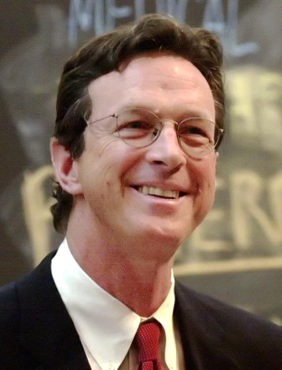

Il existe de nombreux romans qui racontent des histoires sur le climat,
l'environnment, l'écologie et les combats pour défendre ses différents termes.
Parmi ses romans, un seul a retenu notre attention, c'est État d'urgence de Michael Crichton !
État d'urgence, c'est quoi ?
Ce terme peut être employé pour définir de nombreuses situations comme par ex :
pendant la crise sanitaire, le président de la République avait qualifié cette situation d’état d’urgence sanitaire (covid 19).
Mais, dans notre cas, c’est le nom d’un livre écrit par Michael Crichton.
“État d’urgence c’est l’histoire d’un milliardaire du nom de George Morton qui s’écrase du haut d’une falaise avec sa Ferrari juste après avoir annoncé qu’il retirait son soutien à un mouvement écologiste international.
Avant de disparaître, George a laissé un message à son avocat du nom de Peter ainsi qu’à son assistante du nom de Sarah, après avoir décrypté le message.
Ils se retrouvent à faire le tour du monde pour lutter contre un ennemi qui est prêt à détruire la planète.”
C’était un petit résumé du roman de Michael Crichton, si vous voulez l’extrait du livre en intégralité,
nous vous invitons à vous rendre dans la bibliothèque la proche de chez vous.

Pourquoi État d'urgence ?
Michael Cricton a écrit ce livre afin de dénoncer les problèmes concernant l'écologie,
l'environnment, le climat et bien d'autres.
Son but principal était de montrer au monde l'enjeu important qui viendrait à se produire dans les années
futures notamment le réchauffement climatique
(voir article sur le réchauffement climatique).
On pourrait aussi citer la montée des eaux ou encore plein d’autres phénomène qui vont ou se sont déjà produits à cause la négligence des gens dans le monde. C’est pour cela que l’on catégorise cela de combat, un combat pour sauver la planète.
En appelant son roman État d’urgence, Michael Crichton voulait avant tout faire réagir ses lecteurs : leur montrer que le temps compte. Si vous lisez ses lignes c’est que vous avez réussi ou bien qu’il est trop tard.
Extrait du livre,
“- Restez là, fit-il en effleurant son bras dans l’obscurité. Elle attendit sans bouger. L’odeur de l’eau salée était forte ; elle percevait le murmure de l’eau.
Quand les lumières s’allumèrent, leur éclat se réfléchit sur la surface du réservoir long d’une cinquantaine de mètres et large de vingt. Il ressemblait à une grande piscine couverte, avec cette différence qu’il était entouré de tout un appareillage électronique.
et qu’une étrange machine se trouvait à l’extrémité du bassin.
Jonathan Marshall revint, un sourire niais sur le visage.
- Qu’est-ce tu en penses ? lança-t-il en français, avec sa prononciation épouvantable.
- C’est magnifique, répondit la jeune femme en anglais.
Jonathan trouvait son accent exotique ; tout en elle lui paraissait exotique. Avec sa peau mate, ses pommettes hautes et ses cheveux de jais, elle aurait pu être mannequin. Et elle marchait comme un mannequin en jupe courte et talons aiguilles. Elle s’appelait Maria ; elle était eurasienne, de mère vietnamienne.
- Il n’y a personne d’autre ici ? reprit-elle en parcourant la salle du regard.
- Non, non. C’est dimanche : personne ne vient.
Jonathan Marshall avait vingt-quatre ans. Étudiant de troisième cycle en physique à Londres, il suivait un stage d’été au laboratoire de mécanique ondulatoire de L’Institut de la mer, dans la banlieue nord de Paris.
- Avec plaisir.
Marshall se dirigea vers le grand tableau de contrôle et mit en marche les pompes et les capteurs. à l’autre bout du bassin, les trente panneaux de la machine à vagues se mirent en place, l’un après l’autre.
Il se retourna vers Marisa.
- C’est tellement compliqué, fit-elle en souriant.
Elle s’avança, vint se placer à coté de lui, devant le tableau de contrôle.
- Il y a des caméras qui filment ton travail ?
- Oui, au plafond et sur les côtés du réservoir. Elles conservent les images des vagues qui sont produites. II y a aussi des capteurs de pression qui enregistrent les paramètres de la vague.”